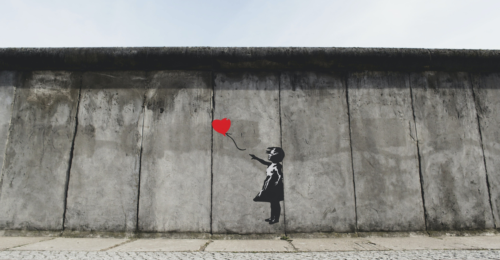

“芸術テロリスト”の異名を取る英出身の画家・バンクシーの展覧会『天才か反逆者か』が、横浜のアソビルにて現在開催されている。
「世界各国で100万人以上を動員した展覧会が日本初上陸！」の触れ込みで、このコロナ禍においても大変盛況のようだ。
正体を明かさない謎のアーティスト、大国を風刺するシニカルな作風、大企業や著名人からの依頼は全て断る反権威、反資本主義者……。世間が知るバンクシーとは一般的にこのような印象だろう。
世界的な画家ではあるが、その画風はとてもキャッチーである点も大きな魅力の一つだ。
例えば代表作とも称される、赤い風船に手を伸ばす少女の絵。ファンからもとても人気のある作品のようだが、バンクシーがつけたタイトルは“Love Is in the Bin”(『愛はごみ箱の中に』)。
//instagram.com/p/BpDMo26h3Cu/embed/
なぜこんなタイトルになったのか。
それはロンドンにある競売会社がこの作品をオークションにかけ、ある資本家が約104万ポンド（約1億5000万円）で落札した瞬間、バンクシーが仕掛けたとされる額縁に仕込まれたシュレッダーにより作品が細断されたからだ。
この出来事は、転売や競売されることで高額商品と化していたバンクシー作品に対してバンクシー自身が「私の作品は誰にも占有できないものだ」という意思を表明した象徴的な事件となった。
それ以外にもディズニーランドを強烈に皮肉った“Dismaland”(ディズマランド）を開催し約35億円もの経済効果を生んだり、イスラエル政府がパレスチナとの間に建設した巨大な分離壁の目の前に“The walled off hotel ”(ザ・ウォールド・オフ・ホテル)、通称「世界一眺めの悪いホテル」を作っては物議を醸している。
一挙手一投足が世界的ムーブメントになる、いわば“現代のピカソ”。
バンクシーをバックアップした歴代の名マネージャーによるブランディング力も大きいとされているが、それでもバンクシーは間違いなく類を見ない才能を持ち合わせているのだろう。
天才か、それとも反逆者か。
永遠の命題が今、僕たちに突きつけられている。
【参考文献】ウィル エルスワース=ジョーンズ 著『バンクシー 壁に隠れた男の正体 BANKSY THE MAN BEHIND THE WALL』(PARCO出版) 2020年6月発行